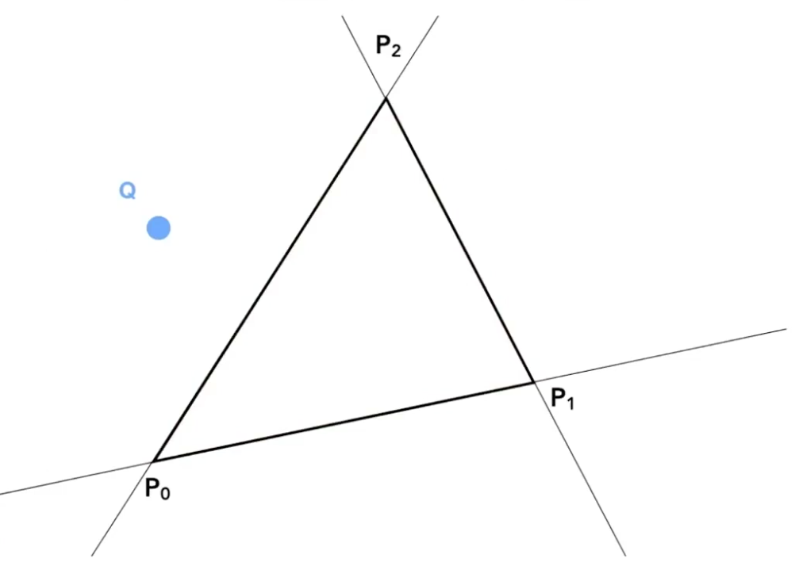
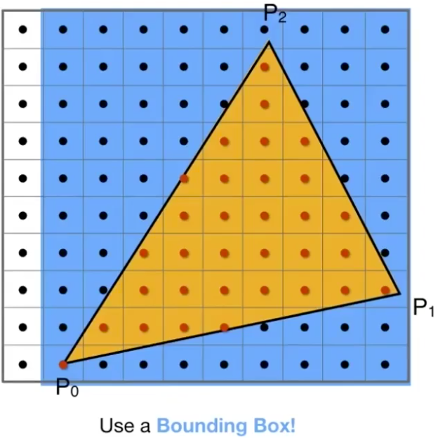
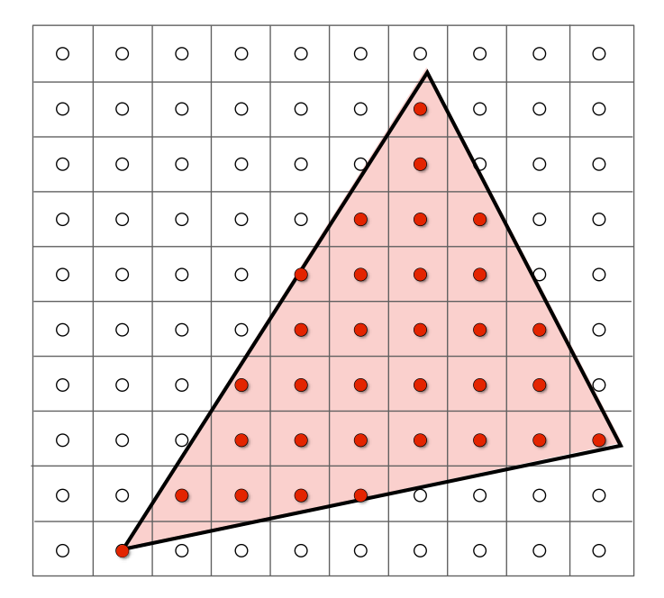

<GAMES101-现代计算机图形学入门> 学习笔记 - 光栅化(1)
文章目录
光栅化
当进行完 MVP 变换之后，所有需要绘制的点都变换到$[-1, 1]^3$中。 接下来就是要将他们画到屏幕上
屏幕由一系列的像素(Pixel)排布形成，像素的数量由分辨率决定，如分辨率是 1920 x 1080 的屏幕，就包含了 1920 x 1080 个像素。
每个像素表示的颜色由红（red）、绿（green）、蓝（blue）三种颜色混合而成。
上面我们建立一个(0,0)在做左下角，X方向向上，Y方向向右的屏幕 每个像素以(x,y)的形式来表示
- x取值[0,width]
- y取值[0,height]
- 像素(x,y)的中心点为(x+0.5,y+0.5)
要绘制立方体空间，我们首先要把立方体空间变换成屏幕空间中。我们忽略z轴方向，所以实际上要做的是把立方体空间中的 XY 平面对应[-1,1]^2的空间变换成屏幕空间。换句话说，只是把[-1,1]^2 变换成[0, width] x [o, height]的空间。只需要经过如下的步骤即可实现
- 缩放
- 将空间的左下角移到原点(缩放后空间的左下角在(-wight/2,-height/2))
三角形
三角形在图形学中应用非常广泛，相比其他图形，它拥有如下性质：
- 复杂图形都能通过三角形组合来表示
- 在空间中的任意三角形的三个顶点都在同一个平面内
- 能很清晰的定义出三角形的内部和外部
- 很容易计算出一个点是位于三角形内部还是外部（通过叉乘）
- 只要定义出三角形的三个顶点的属性，那三角形内部的任意一点都能通过插值的方式计算出对应的属性（通过重心坐标进行插值
当我们知道了三角形三个顶点的坐标之后，下一步就是决定哪些像素应该被填充了。
如上图所示，三角形内部大部分像素都是被覆盖了的，但边缘位置的像素只是覆盖了一部分，那么应该怎么填充呢？
这就是在光栅化中最重要的概念：判断一个像素和三角形的位置关系，更确切来说，是判断一个像素中心点与三角形的位置关系(in or out)。
采样
我们可以通过采样的方式来判断是否应该填充像素。首先要介绍下什么是采样：
采样是把函数离散化的过程。
简单来说就是：给定一个连续函数${f}(x)$ ，然后通过一系列的参数如 1、2、3不断代入 ${f}(x)$ ，求出 ${f}(1)$,${f}(2)$,${f}(3)$ ，这样我们就得到了三个离散的点。这个过程就是在采样了，转换成代码就是：
|
|
因此我们可以通过像素中心对屏幕空间进行采样，判断该像素中心是否被三角形覆盖，以此来判断该像素应不应该被填充。
如上图所示的三角形，我们给出一个采样函数：
我们对所有像素进行一次采样
|
|
那么如何判断一点是否在三角内呢？用叉乘

假设三角形的三个顶点分别是 $P_0,P_1,P_2$，并且三角形是以逆时针的顺序进行绘制的。那么我们可以求出：
如果三者的结果同号，那么就在三角形内部.
然而，如果对每个三角形都进行全屏幕采样的话，性能就非常浪费了。
实际上，我们只需要对三角形所在的轴向包围盒子（Axis Align Bounding Box，简称 AABB）覆盖的范围进行采样即可：

当然AABB也不是性能最好的方案，但是实现起来比较方便
经过采样之后，我们得到这样的图:

最后，我们对像素进行填充

我们得到一个有点类似的三角形的东西。其实这个就是带锯齿的三角形。锯齿其实就是走样，因为我们的采样不够充分而导致走样
采样产生的问题
- jaggies锯齿 - sampling in space
- Moire摩尔纹 - sampling in images
- wagon wheel illusion车轮效应 - sampling in time
- more
产生走样的原因: 信号变换太快，而采样速度太慢
参考
文章作者 dingding
上次更新 2020-06-14